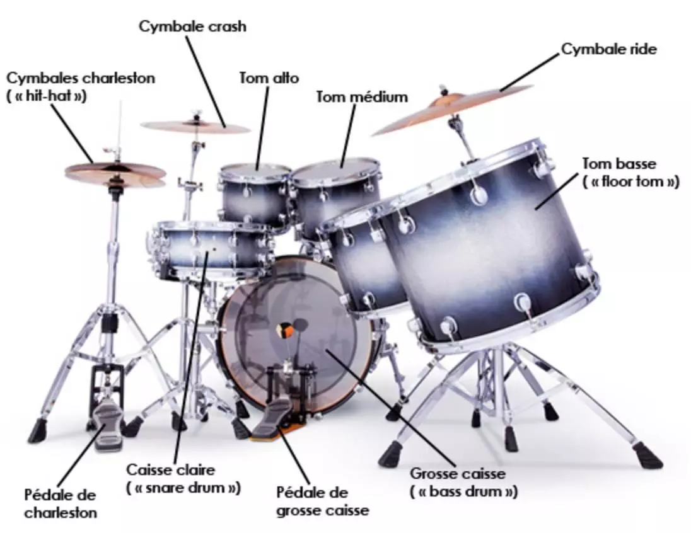
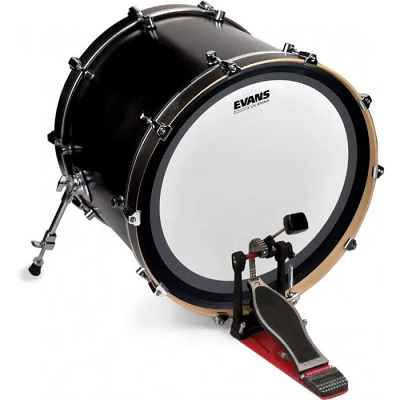
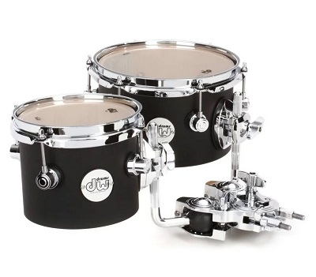
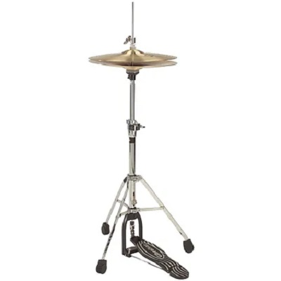
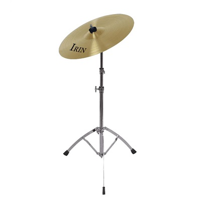
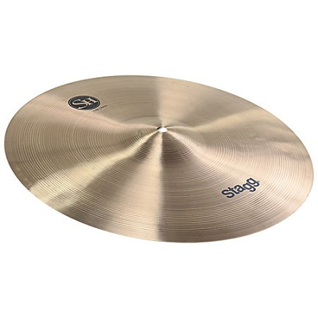
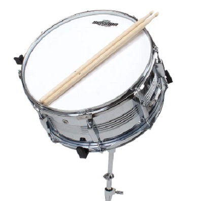

Comment se présente une batterie ?
La musique qui marche au pas, cela ne m'intéresse pas.Georges Brassens
45 % des Français estiment qu'écouter de la musique les met de bonne humeur selon Ipsos. On frappe le tempo, on entame quelques pas de danse, on bouge la tête ou on fredonne, une chose est sûre, personne n'est insensible à un bon morceau de musique qui passe à la radio, dans un bar ou dans une salle de concert.
Et le rythme est donné par le batteur et son instrument. Tel un métronome vivant, il donne les clés aux autres instruments de musique : guitare électrique, guitare basse, saxophone, contrebasse, synthétiseurs...
Mais de quoi est composée une batterie ?
Penchons-nous sur les éléments détaillés des batteries acoustiques.
Sommaire
1) Schéma
Clique sur l'élément de la batterie que tu veux voir en détail.
2) La grosse caisse
Jouer de la batterie, c'est d'abord savoir taper sur la grosse caisse.
La grosse caisse ou bass drum en anglais, est l' élément le plus imposant de la batterie. C'est le fût qui possède le son le plus grave.
Elle est posée sur le flanc, la peau faisant généralement face au public. On retrouve d'ailleurs très souvent le nom du groupe imprimé sur la peau de la grosse caisse.

La grosse caisse standard fait 22 mais il est possible d'en trouver des plus grandes et des plus petites. Plus elle est grande, plus le son est grave.
On joue de la grosse caisse avec une pédale au pied droit pour les droitiers et au pied gauche pour les gauchers. C'est l'élément qui marqueles temps forts du rythme.
Dans le style de musique metal, il est possible de trouver soit deux grosses caisses, soit une double pédale, permettant d'augmenter allègrement la vitesse de frappe du drummer sur la grosse caisse.
3) Les toms
Une batterie standard est aussi constituée de trois toms :
- Un tom aigu ou alto
- Un tom medium
- Un tom basse

On les dispose dans l'ordre, du plus aigu au plus grave, de gauche à droite pour les droitiers et l'inverse pour les gauchers.
Les toms aigu et medium sont placés au-dessus de la grosse caisse, suspendus, tandis que le tom basse est posé au sol.
Comme pour la grosse caisse, plus le tom est petit, plus il est aigu, plus il est grand, plus il sonne grave. La profondeur du tom joue également sur la hauteur du son qu'il donnera.
Deux peaux constituent les toms : une peau de frappe et une peau de résonance plus fine qui fait vibrer le son.
4) Le charleston
Appelé hi-hat en anglais, le charleston ou charley pour les intimes, est composé de deux cymbales retournées l'une sur l'autre et actionnées par une pédale. Il mesure entre 10" et 15".

Situé généralement à gauche pour un droitier et à droite pour un gaucher, le batteur s'en sert pour marquer la base d'un morceau, le tempo.
Le charley peut être utilisé dans différentes positions, modulant ainsi le son : fermé, ouvert ou mi-ouvert.
5) Les cymbales ride
La cymbale ride peut remplacer le charley en étant utilisé pour marquer le tempo.
La cymbale ride existe avec ou sans dôme (flat) et avec des rivets. Elle mesure entre 18" et 24".

Il est possible de la frapper avec l'olive de la baguette sur le dessus, avec la tranche de la baguette sur le bord (au risque de casser sa baguette) ou avec l'olive sur le dôme pour obtenir un son plus rond.
Elle est généralement positionnée sur la droite du batteur.
6) Les cymbales crash
Bien plus fine que la ride, la cymbale crash est utilisée pour accentuer des temps ou amener une nouvelle mesure. Elle tient son nom du bruit qu'elle fait. La cymbale crash mesure entre 14" et 18".

Elle est généralement positionnée à la gauche du batteur.
7) La caisse claire
Apprendre la batterie, c'est aussi apprendre la rythmique à la caisse claire. La caisse claire est un fût horizontal, peu profond, posé entre les jambes du batteur, légèrement sur la gauche pour les droitiers, légèrement sur la droite pour les gauchers. En bois ou en métal, elle produit le son le plus aigu de tous les fûts.

Elle est constituée de deux peaux, une pour la frappe et une pour la résonance mais également d'un timbre : une partie faite de plusieurs fils métalliques située sous la peau de résonance. Il permet de donner un son encore plus aigu à la caisse claire. En anglais, elle est appelée snare drum.
page 4